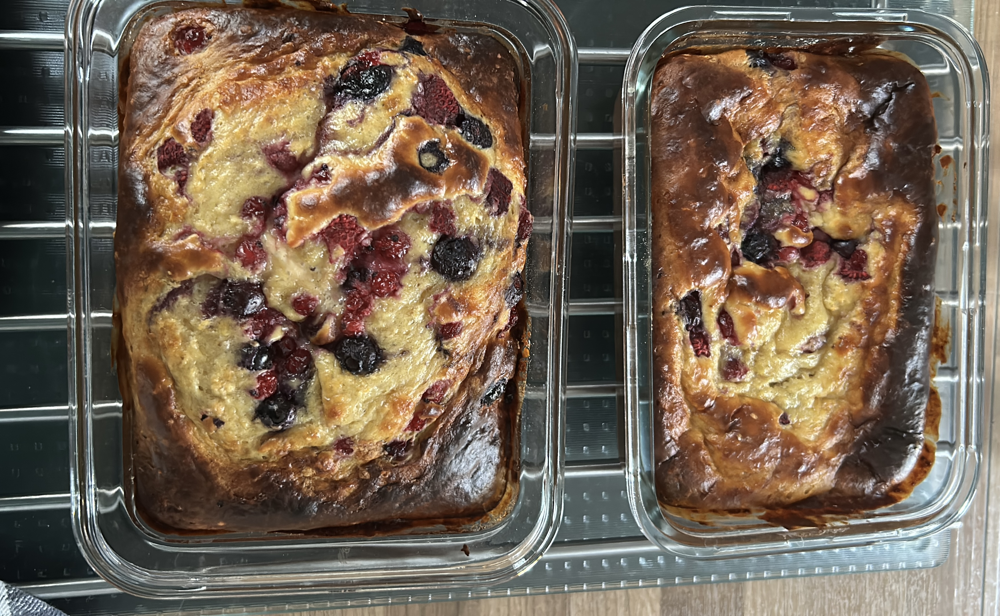

Home
Breakfast Cake

Description
Breakfast cakes are a wonderful way to have a nice breakfast and can easily be prepared for multiple days.
When I started my meal prep, I also needed a way to prepare breakfast and even though Overnight Oats are great, I need some variety. Here a Breakfast cake is a wonderful
alternative, also packed with oats, fruit and yoghurt they are basically just a baked version of a breakfast. Therefore the Name.
If you use this as meal prep, I recommend using glass containers for baking and storing, let them cool properly for a couple hours and place them in the refriegerator.
I use frozen berries here but you can also use bananas or different types of fruits, or any alternative you would put in your breakfast.
Ingredients
For about 3 meals
- 150g frozen berries
- 3 eggs
- 150g rolled oats
- 100g flour
- 200g yoghurt
- 1 tsp baking soda
- 1/2 tsp cinnamon
- 8g vanilla sugar
- 20g honey or maple syrup
- 50g dark chocolate
- A pinch of salt
Steps
- Preheat the oven to 180°C (350°F).
- Heat the berries and mash them in a large bowl.
- Add the eggs, yoghurt and vanilla sugar. Mix well.
- Add the oats, flour, baking soda, cinnamon, and salt.
- Mix everything until you have a thick, smooth batter.
- Break the chocolate in small chips add them and mix well.
- Pour half of the batter into a greased or parchment-lined cake tin.
- Add a small layer of honey or maple syrup on the batter.
- Slowly pour the rest of the batter on top of the honey or maple syrup.
- Bake for approximately 30–40 minutes.
- Check the center with a toothpick. If it comes out mostly clean, the cake is ready.
- Let the cake cool for at least 10 minutes before slicing.
- Enjoy :)
Home